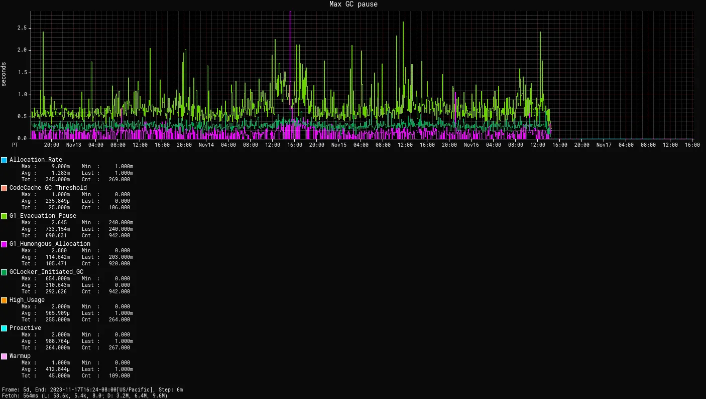

BiConsumer<String, Double> = (s, _) -> // use `s`
Object obj = // ...
if (obj instanceof User(var name, _))
// use `name`
switch (obj) {
case User _ -> userCount++;
case Admin _ -> adminCount++;
}Java 23
Better Language, Better APIs, Better Runtime
Let’s get started!
this session focuses on Java 22 and 23
this is a showcase, not a tutorial
⇝ go to youtube.com/@java for moreslides at slides.nipafx.dev/java-x
(hit "?" to get navigation help)ask questions any time
Lots to talk about!
Final features in Java 22 and 23:
unnamed patterns ㉒
FFM API ㉒
multi-source-file programs ㉒
Markdown in JavaDoc ㉓
generational ZGC by default ㉓
Lots to talk about!
Preview features:
primitive patterns
module imports
string templatesflexible constructor bodies
stream gatherers
class-file API
Java 23
| Final Features |
| Unnamed Patterns |
| FFM API |
| Launch Multi-File Programs |
| Markdown in JavaDoc |
| GenZGC by Default |
| Preview Features |
Underscore
Use _ to mark a (pattern) variable as unused, e.g.:
That last one is very important!
A simple app
Features:
scrapes GitHub projects
creates
Pageinstances:GitHubIssuePageGitHubPrPageExternalPageErrorPage
further processes pages
A simple app
Features:
display as interactive graph
compute graph properties
categorize pages by topic
analyze mood of interactions
process payment for analyses
etc.
A simple architecture?
How to implement features?
methods on
Pageüòßvisitor pattern üò´
pattern matching ü•≥
Pattern Matching
Pattern Matching
Approach:
make
Pagesealedimplement features as methods outside of
Pageaccept
Pageparameters andswitchover itavoid
defaultbranch for maintainability
Sealed Page
Sealed types limit inheritance,
by only allowing specific subtypes.
public sealed interface Page
permits GitHubIssuePage, GitHubPrPage,
ExternalPage, ErrorPage {
// ...
}Switch over Page
public Category categorize(Page page) {
return switch (page) {
case GitHubIssuePage is -> categorizeIssue(is);
case GitHubPrPage pr -> categorizePr(pr);
case ExternalPage ext -> categorizeExternal(ext);
case ErrorPage err -> categorizeError(err);
}
}Default Behavior
Sometimes you have "defaulty" behavior:
public Category categorize(Page page) {
return switch (page) {
// categorize only GitHub pages
case GitHubIssuePage is -> categorizeIssue(is);
case GitHubPrPage pr -> categorizePr(pr);
// return Category.NONE for other page types
}
}How to handle remaining cases?
Maintainability
Unlike an if-else-if-chain,
a pattern switch needs to be exhaustive.
Fulfilled by:
a
defaultbranchexplicit branches:
switching over a sealed types
a
caseper subtype
Default Branches
Option 1:
public Category categorize(Page page) {
return switch (page) {
case GitHubIssuePage is -> categorizeIssue(is);
case GitHubPrPage pr -> categorizePr(pr);
default -> Category.NONE;
}
}Default Branches
If GitHubCommitPage is added:
public Category categorize(Page page) {
return switch (page) {
case GitHubIssuePage is -> categorizeIssue(is);
case GitHubPrPage pr -> categorizePr(pr);
// `GitHubCommitPage` gets no category!
default -> Category.NONE;
}
}⇝ Adding a new subtype causes no compile error! ❌
Explicit Branches In Java 21
Option 2 in Java 21
(without preview features):
public Category categorize(Page page) {
return switch (page) {
case GitHubIssuePage is -> categorizeIssue(is);
case GitHubPrPage pr -> categorizePr(pr);
// duplication üò¢
case ErrorPage err -> Category.NONE;
case ExternalPage ext -> Category.NONE;
};
}Explicit Branches In Java 21
If GitHubCommitPage is added:
public Category categorize(Page page) {
// error:
// "the switch expression does not cover
// all possible input values"
return switch (page) {
case GitHubIssuePage is -> categorizeIssue(is);
case GitHubPrPage pr -> categorizePr(pr);
case ErrorPage err -> Category.NONE;
case ExternalPage ext -> Category.NONE;
}
}⇝ Adding a new subtype causes a compile error! ✅
Explicit Branches
Would be nice to combine branches:
public Category categorize(Page page) {
return switch (page) {
case GitHubIssuePage is -> categorizeIssue(is);
case GitHubPrPage pr -> categorizePr(pr);
case ErrorPage err, ExternalPage ext
-> Category.NONE;
};
}Doesn’t make sense.
(Neither err nor ext would be in scope.)
Explicit Branches in Java 22
Use _ to combine "default branches":
public Category categorize(Page page) {
return switch (page) {
case GitHubIssuePage is -> categorizeIssue(is);
case GitHubPrPage pr -> categorizePr(pr);
case ErrorPage _, ExternalPage _
-> Category.NONE;
};
}⇝ Default behavior without default branch. ü•≥
More
üìù JEP 456: Unnamed Variables & Patterns
Java 23
| Final Features |
| Unnamed Patterns |
| FFM API |
| Launch Multi-File Programs |
| Markdown in JavaDoc |
| GenZGC by Default |
| Preview Features |
Foreign memory
Storing data off-heap is tough:
ByteBufferis limited (2GB) and inefficientUnsafeis… unsafe and not supported
Foreign-memory API
Panama introduces safe and performant API:
control (de)allocation:
Arena,MemorySegment,SegmentAllocatorto access/manipulate:
MemoryLayout,VarHandle
Foreign-memory API
// create `Arena` to manage off-heap memory lifetime
try (Arena offHeap = Arena.ofConfined()) {
// [allocate off-heap memory to store pointers]
// [do something with off-heap data]
// [copy data back to heap]
} // off-heap memory is deallocated hereForeign-memory API
Allocate off-heap memory to store pointers:
String[] javaStrings = { "mouse", "cat", "dog" };
// Arena offHeap = ...
MemorySegment pointers = offHeap.allocateArray(
ValueLayout.ADDRESS, javaStrings.length);
for (int i = 0; i < javaStrings.length; i++) {
// allocate off-heap & store a pointer
MemorySegment cString = offHeap
.allocateUtf8String(javaStrings[i]);
pointers
.setAtIndex(ValueLayout.ADDRESS, i, cString);
}Foreign-memory API
Copy data back to heap:
// String[] javaStrings = ...
// MemorySegment pointers =
for (int i = 0; i < javaStrings.length; i++) {
MemorySegment cString = pointers
.getAtIndex(ValueLayout.ADDRESS, i);
javaStrings[i] = cString.getUtf8String(0);
}Foreign functions
JNI isn’t ideal:
involves several tedious artifacts (header file, impl, …)
can only interoperate with languages that align
with OS/architecture the JVM was built fordoesn’t reconcile Java/C type systems
Foreign-function API
Panama introduces streamlined tooling/API
based on method handles:
jextract: generates method handles from header fileclasses to call foreign functions
Linker,FunctionDescriptor,SymbolLookup
Foreign-function API
// find foreign function on the C library path
Linker linker = Linker.nativeLinker();
SymbolLookup stdlib = linker.defaultLookup();
MethodHandle radixSort = linker
.downcallHandle(stdlib.find("radixsort"), ...);
String[] javaStrings = { "mouse", "cat", "dog" };
try (Arena offHeap = Arena.ofConfined()) {
// [move Java strings off heap]
// invoke foreign function
radixSort.invoke(
pointers, javaStrings.length,
MemorySegment.NULL, '\0');
// [copy data back to heap]
}Finally final!
Java 22 finalizes the FFM API, but there’s more to do:
user-friendly and performant mapping from
native memory to Java records/interfacesimproving jextract and surrounding tooling
And more.
More
üìù JEP 454: Foreign Function & Memory API
üé• Project Panama - Foreign Function & Memory API (Maurizio Cimadamore)
Java 23
| Final Features |
| Unnamed Patterns |
| FFM API |
| Launch Multi-File Programs |
| Markdown in JavaDoc |
| GenZGC by Default |
| Preview Features |
A Mature Ecosystem
Java is very mature:
refined programming model
detailed toolchain
rich ecosystem
But this can make it hard to learn for new (Java) developers.
Approachable Java
Java needs to be approachable:
for kids
for students
for the frontend dev
for ML/AI folks
etc.
Java needs an on-ramp for new (Java) developers!
On-Ramp to Java
On-ramp:
simplified
mainmethod and classsingle-source-file execution
multi-source-file execution
Simpler Code
Remove requirement of:
String[] argsparametermainbeing staticmainbeing publicthe class itself
// smallest viable Main.java
void main() {
// ...
}[Preview in Java 23 — JEP 477]
Simpler Code
Implicitly declared classes, implicitly import:
java.io.IO's methodsprint,println, andreadlnpublic top-level classes in packages exported by java.base
// complete Main.java
void main() {
var letters = List.of("A", "B", "C");
println(letters);
}Single-File Execution
Multi-File Execution
The program can expand:
MyFirstJava
├─ Main.java
├─ Helper.java
└─ Lib
└─ library.jarRun with:
java -cp 'Lib/*' Main.java[Introduced in Java 22 — JEP 458]
Progression
Natural progression:
start with
main()need arguments? ⇝ add
String[] argsneed to organize code? ⇝ add methods
need shared state? ⇝ add fields
need more functionality? ⇝ explore JDK APIs
even more? ⇝ explore simple libraries
need more structure? ⇝ split into multiple files
even more ⇝ use visibility & packages
Doesn’t even have to be that order!
More
Java 23
| Final Features |
| Unnamed Patterns |
| FFM API |
| Launch Multi-File Programs |
| Markdown in JavaDoc |
| GenZGC by Default |
| Preview Features |
Writing JavaDoc
Writing simple JavaDoc is great!
Writing more complex documentation…
where does
<p>go?do we need
</p>?code snippets/blocks are cumbersome
lists are verbose
tables are terrible
…
I blame HTML!
Markdown
Markdown is more pleasant to write:
neither
<p>nor</p>code snippts/blocks are simple
lists are simple
tables are less terrible
embedding HTML is straightforward
Markdown is widely used and known.
Markdown in JavaDoc
Java now allows Markdown JavaDoc:
each line starts with
///CommonMark 0.30
links to program elements use extended
reference link syntax:[text][element]JavaDoc tags work as usual
[Introduced in Java 23 — JEP 467]
Why /// ?
Wouldn’t this be nice:
/**md
*
* Markdown here...
*
*/Why /// ?
No - reason #1:
/**md
*
* Here's a list:
*
* item #1
* item #1
*
*/(The leading * in JavaDoc is optional.)
Why /// ?
No - reason #2:
/**md
*
* ```java
* /* a Java inline comment */
* ```
*
*/(/** can’t contain */.)
Why /// ?
///:
no such issues
doesn’t require new Java syntax
(//already "escapes" parsing)
Code
Inline code with `backticks`.
Code blocks with fences, e.g.:
```java
public void example() { }
```A language tag is set as a CSS class
for JS-based highlighting in the frontend.
(Add a library with javadoc --add-script ….)
Links
Links
Use full reference link to add text:
/// - [the _java.base_ module][java.base/]
/// - [the `java.util` package][java.util]
/// - [the `String` class][String]
/// - [the `String#CASE_INSENSITIVE_ORDER` field][String#CASE_INSENSITIVE_ORDER]
/// - [the `String#chars()` method][String#chars()]Output:
Tables
Markdown tables:
better than HTML tables
still uncomfortable to create manually
use something like tablesgenerator.com
Advanced tables:
for features unsupported in Markdown,
create HTML tables
Tags
JavaDoc tags work as expected:
can be used in Markdown comments
if they contain text, Markdown syntax works
/// For more information on comments,
/// see {@jls 3.7 Comments}.
///
/// @implSpec this implementation does _nothing_
public void doSomething() { }More
üìù JEP 467: Markdown Documentation Comments
Java 23
| Final Features |
| Unnamed Patterns |
| FFM API |
| Launch Multi-File Programs |
| Markdown in JavaDoc |
| GenZGC by Default |
| Preview Features |
Generational ZGC
Compared to other GCs, ZGC:
optimizes for ultra-low pause times
can have higher memory footprint or higher CPU usage
In JDK 21, ZGC became generational.
Generational Hypothesis
most objects die young
those who don’t, grow (very) old
GCs can make use of this by tracking
young and old generations.
ZGC didn’t do this, but can do it now.
Reports
Reports

Default
In JDK 23, generational mode is the default for ZGC:
-XX:+UseZGC
(Default GC is still G1.)
More
üìù JEP 439: Generational ZGC
üìù JEP 474: ZGC: Generational Mode by Default
üé• Generational ZGC and Beyond (Aug 2023)
üé• Java’s Highly Scalable Low-Latency GC: ZGC (Mar 2023)
Deprecations
Cleaning house
Cleaning house
Deprecations (for removal):
Unsafe
Unsafe
You’re probably not using it directly,
but your dependencies may.
Find them with --sun-misc-unsafe-memory-access:
warn: to get run-time warnings todaydebug: same with more infodeny: throws exception
Report and help fix!
Agents
What it is:
a component that transforms byte code
uses
java.lang.instrumentor JVM TIlaunches with JVM or attaches later ("dynamic")
Dynamic agents
What you need to know:
all mechanisms for agents remain intact
nothing changed yet
in the future, dynamic attach will be
disabled by defaultenable with
-XX:+EnableDynamicAgentLoading
Dynamic agents
What you need to do:
run your app with
-XX:-EnableDynamicAgentLoadingobserve closely
investigate necessity of dynamic agents
Finalization
What it is:
finalize()methodsa JLS/GC machinery for them
Finalization
What you need to know:
you can disable with
--finalization=disabledin a future release,
disabledwill be the defaultin a later release, finalization will be removed
Finalization
What you need to do:
search for
finalize()in your code and
replace withtry-with-resources orCleanerAPIsearch for
finalize()in your dependencies and
help remove themrun your app with
--finalization=disabledand
closely monitor resource behavior (e.g. file handles)
Security Manager
What it is:
a system of checks and permissions
intended to safeguard security-relevant
code sectionsembodied by
SecurityManager
Security Manager
What you need to know:
barely used but maintenance-intensive
already disallowed by default
enable with
java.security.manager=allowin a future release, it will be removed
Security Manager
What you need to do:
observe your app with default settings
(⇝ security manager disallowed)if used, move away from security manager
Primitive constructors
What it is:
new Integer(42)new Double(42)etc.
Primitive constructors
What you need to know:
Valhalla wants to turn them into value types
those have no identity
identity-based operations need to be removed
Primitive constructors
What you need to do:
Integer.valueOf(42)Double.valueOf(42)etc.
More
üìù all the aforementioned JEPs
Java 23
| Final Features |
| Preview Features |
| Primitive Patterns |
| Module Imports |
| Flexible Constructor Bodies |
| Stream Gatherers |
| Class-File API |
Patterns so far…
In instanceof and switch, patterns can:
match against reference types
deconstruct records
nest patterns
ignore parts of a pattern
In switch:
refine the selection with guarded patterns
Patterns so far…
That (plus sealed types) are
the pattern matching basics.
This will be:
built up with more features
built out to re-balance the language
Case in Point
The x instanceof Y operation:
meant: "is
xof typeY?"now means: "does
xmatch the patternY?"
For primitives:
old semantics made no sense
⇝ nox instanceof $primitivenew semantics can make sense
Bound Checks
Example: int number = 0;
Can number be an instance of byte?
No, it’s an √¨nt.
But can its value be a byte?
Yes!
Bound Checks
int x = 0;
if (x instanceof byte b)
System.out.println(b + " in [-128, 127]");
else
System.out.println(x + " not in [-128, 127]");More Checks
What’s special about 16_777_217?
Smallest positive int that float can’t represent.
Precision Checks
int x = 16_777_216;
if (x instanceof float f)
// use `f`Tri-state Boolean
Boolean bool = // ...
var emoji = switch (bool) {
case null -> "";
case true -> "✅";
case false -> "❌";
}(Bugged in 23; fixed in 23.0.1 and 24-EA.)
More
üìù JEP 455: Primitive Types in Patterns, instanceof, and switch
Java 23
| Final Features |
| Preview Features |
| Primitive Patterns |
| Module Imports |
| Flexible Constructor Bodies |
| Stream Gatherers |
| Class-File API |
Imports
Which one do you prefer?
// option A
import java.util.ArrayList;
import java.util.HashMap;
import java.util.List;
import java.util.Map;
// option B
import java.util.*;Star Imports
Upsides:
more succinct
easier to manage manually
Downsides:
less clear
chance of conflicts
arbitrary slice of API
Module Imports
import module $mod;imports public API of
$modyour code does not need to be in a module
[Preview in Java 23 — JEP 476]
Module Import Details
import module $mod;Imports all public top-level types in:
packages exported by
$modpackages exported by
$modto your module
(qualified exports)packages exported by modules that
$mod
requires transitively (implied readability)
Module Imports
Upsides:
much more succinct
trivial to manage manually
Downsides:
less detailed
conflicts are more likely
Conflicts
import module java.base;
import module java.desktop;
import module java.sql;
public class Example {
public void example() {
// error: reference to Date is ambiguous
var outdated = new Date(1997, 1, 18);
// error: reference to List is ambiguous
var letters = List.of("I", "J", "N");
}
}Resolving Conflicts
import module java.base;
import module java.desktop;
import module java.sql;
import java.util.Date;
import java.util.List;
public class Example {
public void example() {
var outdated = new Date(1997, 1, 18);
var letters = List.of("I", "J", "N");
}
}Use Cases
Consider using module imports, when:
you’re already using star imports
you’re writing scripts, experiments, demos, etc.
Default Import
Implicitly declared classes, implicitly import java.base:
// complete Main.java - no explicit imports!
void main() {
List<?> dates = Stream
.of(1, 2, 23, 29)
.map(BigDecimal::new)
.map(day -> LocalDate.of(
2024,
RandomGenerator.getDefault()
.nextInt(11) + 1,
day.intValue()))
.toList();
System.out.println(dates);
}More
üìù JEP 476: Module Import Declarations
Java 23
| Final Features |
| Preview Features |
| Primitive Patterns |
| Module Imports |
| Flexible Constructor Bodies |
| Stream Gatherers |
| Class-File API |
String composition
Composing strings in Java is cumbersome:
String property = "last_name";
String value = "Doe";
// concatenation
String query =
"SELECT * FROM Person p WHERE p."
+ property + " = '" + value + "'";
// formatting
String query =
"SELECT * FROM Person p WHERE p.%s = '%s'"
.formatted(property, value);Comes with free SQL injection! üò≥
String interpolation
Why not?
// (fictional syntax!)
String query =
"SELECT * FROM Person p "
+ "WHERE p.\{property} = '\{value}'";Also comes with free SQL injection! üò≥
String interpolation
SQL injections aren’t the only concern.
These also need validation and sanitization:
HTML/XML
JSON
YAML
…
All follow format-specific rules.
String templates
Quo Vadis?
string templates were removed from JDK 23
(not even a preview)the feature needs a redesign
timing is unknown
üòû
More
Java 23
| Final Features |
| Preview Features |
| Primitive Patterns |
| Module Imports |
| Flexible Constructor Bodies |
| Stream Gatherers |
| Class-File API |
Constructor Chaining
With multiple constructors, it’s good practice
to have one constructor that:
checks all arguments
assigns all fields
Other constructors just forward (if possible).
Constructor Chaining
class Name {
private final String first;
private final String last;
Name(String first, String last) {
// [... checks for null, etc. ...]
this.first = first;
this.last = last;
}
Name(String last) {
this("", last);
}
}Inheritance
With superclasses, chaining is enforced:
class ThreePartName extends Name {
private final String middle;
ThreePartName(
String first, String middle, String last) {
// doesn't compile without this call
super(first, last);
this.middle = middle;
}
}Limitations
But:
Java allows no statements before
super(…) / this(…)!
Why?
No statements before super(…) / this(…):
superclass should be initialized
before subclass runs any code
⇝ no code beforesuper(…)code before
this(…)would
run beforesuper(…)
⇝ no code beforethis(…)
Limitations
This is inconvenient when you want to:
check arguments
prepare arguments
split/share arguments
Splitting Arguments
class Name {
// fields and constructor as before
Name(String full) {
// does the same work twice
this(
full.split(" ")[0],
full.split(" ")[1]);
}
}Splitting Arguments
class Name {
// fields and constructor as before
// avoids two splits but "costs"
// duplicated argument validation
Name(String full) {
String[] names = full.split(" ");
// [... checks for null, etc. ...]
this.first = names[0];
this.last = names[1];
}
}Splitting Arguments
class Name {
// fields and constructor as before
// avoids two splits but "costs"
// an additional constructor
Name(String full) {
this(full.split(" "));
}
private Name(String[] names) {
this(names[0], names[1]);
}
}Splitting Arguments
class Name {
// fields and constructor as before
// avoids two splits but "costs"
// an additional construction protocol
static Name fromFullName(String full) {
String[] names = full.split(" ");
return new Name(names[0], names[1]);
}
}Limitations - Record Edition
To enforce a uniform construction protocol:
Records require all custom constructors
to (eventually) call the canonical constructor.
Limitations - Record Edition
record Name(String first, String last) {
// nope
Name(String full) {
String[] names = full.split(" ");
// [... checks for null, etc. ...]
this.first = names[0];
this.last = names[1];
}
}Splitting Arguments
What we want to write:
record Name {
Name(String full) {
String[] names = full.split(" ");
this(names[0], names[1]);
}
}(Analogous for classes.)
Statements Before …
Java 23 previews statements
before super(…) and this(…).
Great to…
Check Arguments
class ThreePartName extends Name {
private final String middle;
ThreePartName(
String first, String middle, String last) {
// can't have a middle name without a first name
requireNonNullNonEmpty(first);
super(first, last);
this.middle = middle;
}
}Prepare Arguments
class ThreePartName extends Name {
private final String middle;
ThreePartName(
String first, String middle, String last) {
// shorten first if middle is given
var short1st = middle.length() == 1
? first.substring(0, 1)
: first;
super(short1st, last);
this.middle = middle;
}
}Split Arguments
class ThreePartName extends Name {
private final String middle;
ThreePartName(String full) {
// split "first middle last" on space (once üôåüèæ)
var names = full.split(" ");
super(names[0], names[2]);
this.middle = names[1];
}
}Surprising Cameo
Project Valhalla ponders non-nullable types
has to work with
super()subclass sets non-null fields before
super()
More
üìù JEP 482: Flexible Constructor Bodies
üé• Valhalla - Where Are We? (Brian Goetz - Aug 2024)
Java 23
| Final Features |
| Preview Features |
| Primitive Patterns |
| Module Imports |
| Flexible Constructor Bodies |
| Stream Gatherers |
| Class-File API |
Missing Stream Ops
Streams are great, but some
intermediate operations are missing:
sliding windows
fixed groups
take-while-including
scanning
increasing sequences
etc.
Missing Terminal Ops
Streams also don’t have all possible terminal operations.
Instead:
generalization for terminal ops ⇝ collectors
a few implementations, e.g.
Collectors.toSet()extension point for them:
Stream::collect
Let’s do the same for intermediate ops!
Introducing Gatherers
The gatherers API consists of:
generalization for intermediate ops ⇝ gatherers
a few implementations, e.g.
Gatherers.scan(…)extension point for them:
Stream::gather
Stream.of("A", "C", "F", "B", "S")
.gather(scan(...))
.forEach(System.out::println);Gatherer Building Blocks
One required building block:
- Integrator
accepts
(state, element, downstream)has the task to combine
stateandelementto update the
stateto emit 0+ result(s) to
downstream
Integrator Example
Behaves transparently:
static <T> Gatherer<T, ?, T> transparent() {
Integrator<Void, T, T> integrator = (_, el, ds)
-> ds.push(el);
return Gatherer.of(integrator);
}Integrator Example
Reimplements Stream::map:
static <T, R> Gatherer<T, ?, R> map(Function<T, R> f) {
Integrator<Void, T, R> integrator = (_, el, ds) -> {
R newEl = f.apply(el);
return ds.push(newEl);
};
return Gatherer.of(integrator);
}Gatherer Building Blocks
Three optional building blocks:
- Initializer:
creates instance(s) of
state- Finisher:
accepts
(state, downstream)emits 0+ element(s) to
downstream
- Combiner:
combines to
statesinto one
Fixed-Sized Groups
Create groups of fixed size:
stream input: "A", "C", "F", "B", "S"
output of
groups(2): ["A", "C"], ["F", "B"], ["S"]
We need:
an initializer to create empty group list
an integrator that emits when group is full
a finisher to emit incomplete group
Fixed-Sized Group Initializer
Supplier<List<T>> initializer = ArrayList::new;Fixed-Sized Group Integrator
Integrator<List<T>, T, List<T>> integrator =
(list, el, ds) -> {
list.add(el);
if (list.size() < size)
return true;
else {
var group = List.copyOf(list);
list.clear();
return ds.push(group);
}
};Fixed-Sized Group Finisher
BiConsumer<List<T>, Downstream<List<T>>> finisher =
(list, ds) -> {
var group = List.copyOf(list);
ds.push(group);
};Fixed-Sized Group Gatherer
static <T> Gatherer<T, ?, List<T>> groups(int size) {
Supplier<...> initializer = // ...
Integrator<...> integrator = // ...
BiConsumer<...> finisher = // ...
return Gatherer.ofSequential(
initializer, integrator, finisher);
}Fixed-Sized Group Gatherer
Using our gatherer:
Stream.of("A", "C", "F", "B", "S")
.gather(groups(2))
.forEach(System.out::println);
// [A, C]
// [F, B]
// [S]More
üìù JEP 473: Stream Gatherers
üé• Teaching Old Streams New Tricks (Viktor Klang)
Java 23
| Final Features |
| Preview Features |
| Primitive Patterns |
| Module Imports |
| Flexible Constructor Bodies |
| Stream Gatherers |
| Class-File API |
Bytecode Basics
Bytecode is instruction set for JVM:
creating objects and arrays
copying variable values or references
between stack and registersinvoking methods
computing arithmetic operations
etc.
Bytecode Basics
Basic lifecycle:
generated by javac
stored in
.classfilesloaded, parsed, verified by class loader
executed by JVM
Bytecode Beyond Basics
In real life, much more happens:
generated by frameworks at build time
turned into machine code by JIT compiler
or Graal native imageprefetched by class-data sharing
analyzed by jdeps, SpotBugs, etc.
manipulated by agents and libraries
Bytecode Tools
Tooling:
libraries don’t manipulate bytecode themselves
they use a few tools
Big player is ASM
(direct or, e.g., via ByteBuddy or CGLIB).
Migration Pains
Updates:
bytecode has a level (e.g. 65 for Java 21)
tools can’t work with a higher level
than they were built for
This can block updates!
E.g. when compiling your code with Java 25 (level 69)…
Migration Pains
This is the reason for:
Before updating the JDK,
update all dependencies.
We want to move past that!
Class-File API
An API in Java that allows
analyzing and manipulating bytecode:
stable API in JDK
always up-to-date
When JDK is updated:
it may read new bytecodes
but that’s ok for most use cases
More
üìù JEP 466: Class-File API
üé• A Classfile API for the JDK (Brian Goetz)
Java 22/23
In a few slides…
Java 22/23 Introduce
Java 23 Previews
Java 23 Continues
Java 22/23
Not explosive like Java 21,
but no slouches either.
Continue Java’s evolution.
Get JDK 23 at jdk.java.net/23.
So long…

More
Slides at slides.nipafx.dev⇜ Get my book!
Follow Nicolai
nipafx.dev/nipafx
Follow Java
inside.java // dev.java/java // /openjdk
Image Credits
all other images are copyrighted